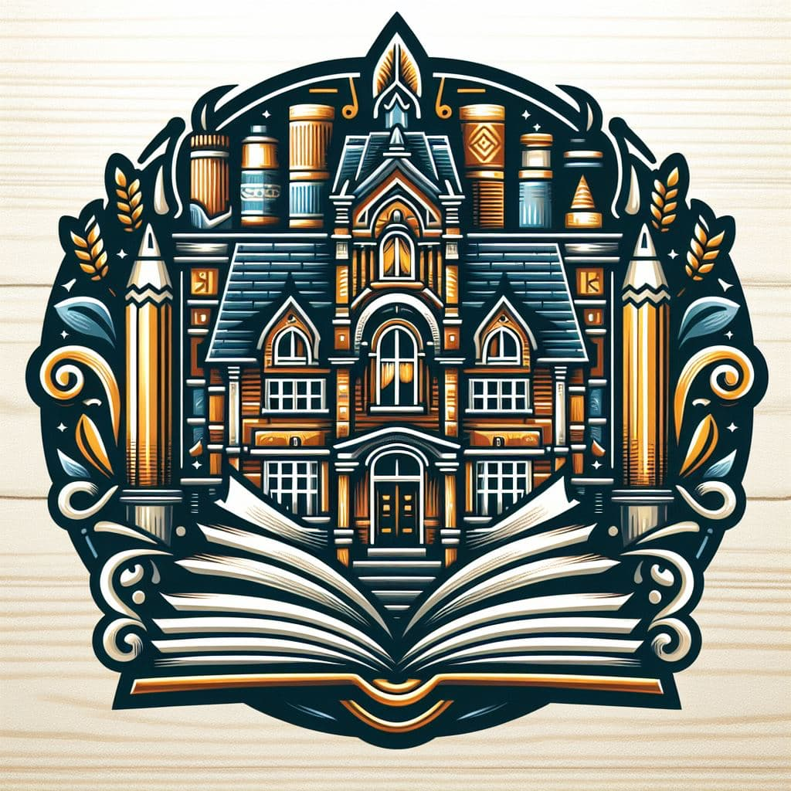
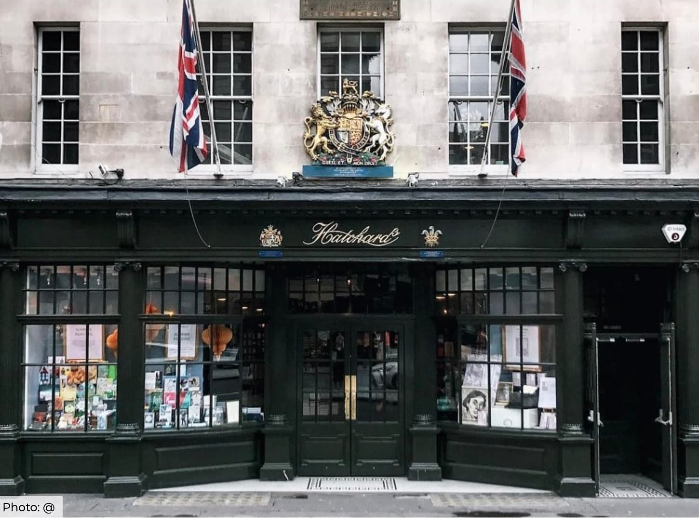

Shelf Wanderer
Welkom op Pages & Places, de plek waar literaire ontdekkingen en boekwinkelavonturen samenkomen! Als boekenliefhebber heb ik het voorrecht gehad om een reis langs de planken te maken, van gezellige onafhankelijke boekwinkels tot indrukwekkende boekhandels in bruisende steden. Op deze pagina deel ik mijn ervaringen, impressies en persoonlijke reisverhalen van de boekwinkels die ik heb bezocht. Of je nu een medeboekenwurmpje bent dat op zoek is naar nieuwe boekwinkelbestemmingen, of gewoon geïnteresseerd bent in de magie van boekhandels, hier vind je recensies, aanbevelingen en misschien zelfs een vleugje boekenwinkelhistorie. Laten we samen verdwalen in de geur van vers gedrukte pagina's, de rustige sfeer van een leeshoekje ervaren en de unieke charme van elke boekhandel ontdekken. Bereid je voor om met mij mee te gaan op een literaire reis vol boekenliefde en ontdekkingen. Pak je leesbril en laat ons samen de wereld van boekwinkels verkennen!
Boekenwinkels
Amsterdam

Boekhandel Scheltema
Boekhandel Scheltema, gelegen aan het Rokin in het hart van Amsterdam, is een literair instituut dat sinds 1853 lezers verwelkomt met zijn indrukwekkende collectie boeken. Met een rijke geschiedenis en een eigentijdse uitstraling biedt Scheltema een unieke boekwinkelervaring in de bruisende hoofdstad van Nederland. De ruime en lichte winkelruimte herbergt een uitgebreide selectie boeken, variërend van bestsellers en literaire klassiekers tot nichegenres en internationale auteurs. Scheltema staat bekend om zijn gastvrije sfeer, waar bezoekers worden aangemoedigd om rustig rond te dwalen tussen de boekenplanken en nieuwe literaire ontdekkingen te doen. Naast het uitgebreide boekenaanbod organiseert Scheltema regelmatig evenementen, waaronder boekpresentaties, lezingen en signeersessies met bekende auteurs. Het café op de bovenste verdieping biedt een gezellige plek voor lezers om te ontspannen en te genieten van een kop koffie te midden van boekwinkelpracht. Of je nu een lokale literatuurliefhebber bent of een bezoeker die hunkert naar een authentieke boekhandel ervaring, Boekhandel Scheltema is een must-visit bestemming voor een duik in de rijke wereld van de geschreven kunst. Het is een plaats waar het verleden en het heden van Amsterdam samenkomen in de liefde voor het geschreven woord.
Waterstones
In het hart van de Amsterdamse boekenwijk, in een prachtig gebouw, ontworpen door de bekende Nederlandse architect HP Berlage, heeft onze winkel een ontspannen sfeer, met deskundig, boek liefhebbend personeel. Naast een groot assortiment boeken hebben we ook wenskaarten, briefpapier en cadeaus, Brits eten, speelgoed en spelletjes op voorraad, verdeeld over vier verdiepingen. Aandachtsgebieden zijn Engels en Nederlands als tweede taal, Kinderboeken, Nederlandse fictie in Engelse vertaling en Young Adult LGBTQ+. Mochten wij iets niet op voorraad hebben, dan kunnen wij ieder beschikbaar boek zonder extra kosten bestellen. We leggen grote nadruk op persoonlijke aanbevelingen van onze boekverkopers, die u overal in de winkel kunt vinden. We hebben momenteel een boekengroep voor klassieke fictie, een boekengroep voor moderne fictie en een boekengroep voor jonge volwassenen/nieuwe volwassenen. Uiteindelijk willen we dat u geniet van uw bezoek aan onze winkel en dat u met de juiste boeken naar huis gaat. We houden van boeken, we houden van lezen en we helpen mensen graag geweldige boeken te vinden om te lezen.
De Kinderboekwinkel
De Kinderboekwinkel op de Rozengracht 34 in Amsterdam is een ware schatkamer voor jonge lezers en hun ouders. Met een charmante locatie in een van de meest levendige buurten van de stad, biedt deze boekhandel een zorgvuldig samengestelde collectie kinderboeken die de verbeelding prikkelen en leesplezier stimuleren. De winkel straalt een uitnodigende sfeer uit, waar kleurrijke displays en knusse hoekjes kinderen aansporen om de wereld van boeken te verkennen. Van klassiekers tot hedendaagse favorieten, van prentenboeken tot jeugdromans, De Kinderboekwinkel heeft voor elk leesniveau en elke leeftijd iets te bieden. Wat deze boekhandel echt bijzonder maakt, is het toegewijde en deskundige personeel. Ze staan klaar om aanbevelingen te doen, vragen te beantwoorden en leesadvies te geven, waardoor het een waardevolle bron wordt voor ouders die op zoek zijn naar inspirerende en educatieve boeken voor hun kinderen. De Kinderboekwinkel op de Rozengracht 34 is niet alleen een plek om boeken te kopen; het is een plek waar de liefde voor lezen wordt gekoesterd en waar elk bezoek een ontdekkingsreis is voor jonge geesten. Het draagt bij aan de levendige literaire cultuur van Amsterdam en blijft een geliefde bestemming voor gezinnen die de magie van verhalen willen delen met de volgende generatie.
Almere
Stumpel
Stumpel, opgericht in 1880, is een bekende boekhandelketen in Nederland met een rijke geschiedenis en een solide reputatie. Met verschillende vestigingen in steden verspreid over het land, biedt Stumpel niet alleen een uitgebreide selectie boeken, maar ook kantoorartikelen, schoolbenodigdheden en hobby gerelateerde producten. Wat Stumpel onderscheidt, is de combinatie van traditie en moderne dienstverlening. De winkels streven ernaar om aan de uiteenlopende behoeften van klanten te voldoen, of het nu gaat om het vinden van het nieuwste bestsellerboek, kantoorbenodigdheden voor professioneel gebruik, of inspiratie voor creatieve projecten. De vriendelijke en deskundige medewerkers van Stumpel dragen bij aan de warme en gastvrije sfeer van de winkels. Ze staan klaar om klanten te adviseren en te assisteren, waardoor elke winkelervaring persoonlijk en aangenaam wordt. Of je nu op zoek bent naar literaire schatten, praktische kantoorbenodigdheden of creatieve inspiratie, Stumpel biedt een veelzijdige winkelervaring die de behoeften van een gevarieerd publiek aanspreekt. Het is een plek waar lezers, studenten en creatieve geesten samenkomen om te genieten van de veelzijdigheid van geschreven woorden en nuttige benodigdheden.
Zwolle
Waanders in de Broeren
Boekhandel Waanders in de Broeren, gevestigd in de prachtige Broerenkerk in Zwolle, biedt een unieke en sfeervolle boekwinkelervaring. De historische setting van de voormalige kerk voegt een bijzondere dimensie toe aan het winkelen voor boeken. Waanders in de Broeren huisvest een uitgebreide collectie boeken, variërend van literaire werken en bestsellers tot kunstboeken en kinderliteratuur. De hoge plafonds en indrukwekkende architectuur van de kerk zorgen voor een atmosfeer van rust en contemplatie, waardoor het bladeren door boeken een bijzonder genot wordt. Naast het diverse boekenaanbod heeft Waanders in de Broeren ook een café waar bezoekers kunnen genieten van een kop koffie te midden van de boekenpracht. De combinatie van literatuur, geschiedenis en architectuur maakt een bezoek aan deze boekhandel een verrijkende ervaring. Deze boekwinkel is niet alleen een plaats voor het kopen van boeken; het is een culturele bestemming waar lezers en kunstliefhebbers samenkomen om te genieten van de geneugten van geschreven woorden en de pracht van een unieke omgeving. Waanders in de Broeren belichaamt de harmonieuze samensmelting van literatuur en erfgoed.
Utrecht
Broese
Boekhandel Broese, gelegen in het hart van Utrecht aan Stadhuisbrug 5, is al decennia lang een geliefde bestemming voor boekenliefhebbers. Met een rijke geschiedenis die teruggaat tot 1845, biedt Broese niet alleen een uitgebreide collectie boeken, maar ook een sfeervolle en gastvrije omgeving. De winkel strekt zich uit over meerdere verdiepingen en huisvest een diverse selectie boeken, variërend van literatuur en non-fictie tot kinderboeken en lokale auteurs. De ruime opzet en vriendelijke ambiance nodigen uit tot ontspannen rondsnuffelen en het ontdekken van nieuwe literaire schatten. Naast het indrukwekkende boekenaanbod organiseert Broese regelmatig evenementen, waaronder boeklanceringen, signeersessies en lezingen van bekende auteurs. Het café in de boekhandel biedt bezoekers een aangename plek om te genieten van een kop koffie te midden van de boekenpracht. Boekhandel Broese is niet zomaar een winkel; het is een literaire ontmoetingsplaats waar de liefde voor boeken wordt gedeeld en gevierd. Of je nu op zoek bent naar de nieuwste bestseller, een klassieker of gewoon wilt rondstruinen in de wereld van de geschreven kunst, Broese verwelkomt elke lezer met open armen in de bruisende stad Utrecht.
Londen
Waterstones Picadilly
Waterstones aan Piccadilly in Londen is een boekenwinkel van epische proporties. Gelegen aan 203-206 Piccadilly, staat het bekend als Europa's grootste boekhandel en een must-visit bestemming voor boekenliefhebbers. Met zijn indrukwekkende zes verdiepingen biedt de winkel een uitgebreide selectie boeken, variërend van bestsellers en klassiekers tot zeldzame en gesigneerde exemplaren. De Waterstones op Piccadilly is niet alleen een boekhandel, maar ook een literair mekka. Het herbergt regelmatig auteursevenementen, boeklanceringen en literaire bijeenkomsten, waardoor het een ontmoetingsplaats is voor zowel gevestigde als opkomende schrijvers. De bovenste verdieping herbergt een café met uitzicht op Piccadilly Circus, waardoor bezoekers kunnen genieten van een ontspannen sfeer te midden van boeken. Met zijn rijke geschiedenis en statige architectuur is Waterstones Piccadilly niet alleen een winkel, maar ook een cultureel en literair landmark in het hart van Londen. Het nodigt bezoekers uit om te dwalen door de gangpaden, zich te laten inspireren door de literaire schatten en de unieke sfeer van deze boekenhemel te ervaren.

Hatchards
Hatchards, gelegen aan 187 Piccadilly in Londen, is een van 's werelds oudste boekwinkels en een icoon in de literaire wereld. Opgericht in 1797, heeft deze boekhandel een rijke geschiedenis en heeft het de status van hofleverancier aan koningen, koninginnen en de Britse koninklijke familie. Deze boekenwinkel straalt een tijdloze charme uit met zijn klassieke inrichting en houten boekenplanken. Het is niet alleen een plek waar boeken worden verkocht, maar ook een culturele instelling waar literaire geesten elkaar ontmoeten. De collectie omvat een breed scala aan genres, van klassiekers en hedendaagse werken tot zeldzame edities en gesigneerde exemplaren. Hatchards organiseert regelmatig boeklanceringen, lezingen en signeersessies, waardoor het een ontmoetingsplaats is voor schrijvers en lezers. De winkel heeft een onmiskenbare elegantie en biedt een unieke winkelervaring voor diegenen die op zoek zijn naar literaire schatten en tijdloze werken. Als een bewaker van literair erfgoed nodigt Hatchards bezoekers uit om een stap terug in de tijd te zetten en de tijdloze schoonheid van boeken te ervaren te midden van de bruisende energie van Piccadilly in Londen. Het is niet alleen een boekwinkel; het is een literaire bestemming doordrenkt van geschiedenis en verhalen.